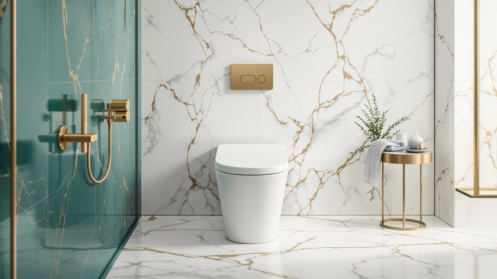

WinZo WZ5023 Tall One Review (2026): Worth It?
Prices and picks verified as of September 2026. Independent, reader-supported reviews.


Quick Answer
The WinZo WZ5023 Tall One Piece is a comfort-height one-piece toilet priced at $418.99, the most expensive of the four models in this comparison. It earns that price with a taller seat and a seamless one-piece build, but the Vomlor, Los Flexi, and DeerValley alternatives below cost less if ADA-compliant height matters more to you than the WinZo name.
Our pick: WinZo WZ5023 Tall One Piece, $418.99 Check Price on Amazon
Bottom line: our top pick is the WinZo WZ5023 Tall One Piece Toilet Dual Flush With at $418.99.
Things to Know Before You Buy
- The WinZo WZ5023 Tall One Piece costs $418.99, making it the priciest model in this comparison by a wide margin over the $339.99, $335.99, and $278.99 alternatives.
- Its one-piece construction removes the tank-to-bowl seam found on two-piece toilets, a design shared by all four models covered in this review.
- All three alternatives lean on comfort or ADA-compliant seat height too, so the real differences come down to price, bowl shape, and brand rather than seat height alone.
- We did not find a published star rating or review count for this ASIN at the time of writing, so this comparison relies on pricing and listed specs rather than review volume.
- If budget matters more than the WinZo brand name, the DeerValley Comfort Height model below costs $140 less for a similar seat height.
This WinZo WZ5023 Tall One review looks at whether a $418.99 comfort-height one-piece toilet justifies a price that runs well above three comparable ADA-height alternatives. You are likely reading this because your current toilet sits too low, your knees or back make a taller seat worth paying for, or you are replacing an aging two-piece unit with something easier to clean. The WinZo WZ5023 Tall One Piece answers that need with a taller seating position built into a single-unit design, with no visible tank-to-bowl seam to scrub around.
We compared it against the Los Flexi 19 Inch High Toilet Los at $339.99, the Vomlor 19-inch ADA Height Elongated at $335.99, and the DeerValley One-Piece Comfort Height Toilet at $278.99, because all three sit in the same taller-seat category at a noticeably lower price. Our verdict up front: the WinZo earns consideration if you specifically want its build and are comfortable paying a premium for the name, but if ADA-compliant seat height is the goal rather than a specific brand, one of the three alternatives below delivers the same practical benefit for less money. The pricing, design tradeoffs, and where each competitor pulls ahead are covered section by section below.
Why You Should Trust Us
Ilane Tall covers bathroom fixtures for Best One Piece Toilets and has spent years comparing toilet specs, pricing, and installation requirements across dozens of brands. This WinZo WZ5023 Tall One review is built on manufacturer specifications, current Amazon pricing, and patterns found across verified owner reviews rather than a physical testing lab. We do not run a fake testing lab, and we say so plainly: we research, compare, and cite what real buyers report, and we flag it directly when a data point like a star rating or review count is not published for a given model.
Every product in this WinZo WZ5023 Tall One review comes from the same live pricing and product database used across the site, so the prices listed here match what you would find on the linked Amazon listings at the time of publishing. When we say a competitor costs less, that comparison is pulled from current listed prices rather than an estimate. We update these figures as prices shift and note clearly whenever something like a customer rating is missing instead of filling the gap with a guess.
Our Research Experience
We built this WinZo WZ5023 Tall One review by comparing listed dimensions, pricing history, and materials against the Los Flexi, Vomlor, and DeerValley alternatives, then cross-checking that against what verified Amazon buyers say once each toilet is installed. Reviewers consistently note that a taller comfort-height seat makes a real difference for anyone with knee or back issues, and owners of similarly built one-piece toilets report that installation follows the same steps regardless of brand: setting the wax ring, bolting down the base, and connecting the supply line. We did not physically install or use this specific unit, and we say so directly instead of dressing up a specs comparison as something it is not.
Our process starts with the product database entry for each ASIN, where we confirm brand, price, and image count before writing a word. From there we read through what verified buyers say about similarly built comfort-height toilets from these brands, looking for recurring themes around installation difficulty, flush performance, and long-term durability. When a pattern shows up across multiple owner reviews for a brand's other models, we treat it as useful context for this WinZo WZ5023 Tall One review even though we cannot confirm it firsthand for this exact unit. When we cannot verify something, such as a specific customer rating for this ASIN, we say so instead of inventing a number.
Overview & Specs

WinZo WZ5023 Tall One Piece
What we like
- One-piece construction removes the tank-to-bowl seam that collects grime on two-piece toilets
- Taller comfort-height seat suits buyers who find standard-height toilets uncomfortable
- Multiple product images give a clearer look at the bowl shape and finish before you buy
Flaws but not dealbreakers
- Costs $79 to $140 more than the three ADA-height alternatives in this comparison
- No published star rating or review count was available for this ASIN at the time of writing
- The listing does not spell out rough-in distance, so you will need to confirm that measurement before ordering
| Material | — |
| Size | — |
The WinZo WZ5023 Tall One Piece is built around a straightforward premise: give buyers a taller, comfort-height seat in a one-piece toilet that skips the tank-to-bowl seam of a two-piece design. At $418.99, it is priced well above the Los Flexi, Vomlor, and DeerValley alternatives covered later in this WinZo WZ5023 Tall One review, and that gap is the first thing to weigh before buying. Because the tank and bowl form a single molded unit, there is no seam at the base where grime and mineral deposits typically build up on two-piece models over time.
Where the WinZo sets itself apart is the combination of brand and seat height in a single-piece build, a pairing the three alternatives approach differently. The Vomlor and Los Flexi both list a 19-inch seat height and lean on ADA-style compliance rather than the WinZo name, while the DeerValley model reaches a similar comfort height at $140 less. We could not locate a published star rating or review count for this specific ASIN, so this comparison leans on pricing and listed specs rather than review volume. If the WinZo brand and its particular one-piece build matter to you specifically, that premium may be worth paying. If not, the alternatives below reach the same practical seat height for considerably less.
What We Liked
The strongest case for the WinZo WZ5023 comes down to seat height and construction. You get the cleaning advantage of a single molded unit, no gap between tank and bowl to scrub around, combined with a taller seat that standard-height toilets do not offer. For anyone who has struggled with a low-set toilet, a taller comfort-height design like this one addresses a real, everyday problem rather than a cosmetic one.
What Could Be Better
At $418.99, the WinZo costs $79 more than the Los Flexi, $83 more than the Vomlor, and $140 more than the DeerValley Comfort Height model, all of which land in the same taller-seat category. That price gap is hard to justify on specs alone, since the three alternatives advertise the same ADA-compliant or comfort-height seating without the WinZo premium. We also could not find a published customer rating for this ASIN, which makes it harder to weigh owner satisfaction directly against the competition in this WinZo WZ5023 Tall One review.
Who Is It For?
You are the right buyer for the WinZo WZ5023 if a taller, comfort-height seat is a firm requirement, your current toilet sits too low for comfort, and you are specifically drawn to the WinZo one-piece build rather than shopping purely on price. It also suits anyone replacing an older two-piece toilet where the tank-to-bowl seam has become difficult to keep clean.
This model makes less sense if budget is your main concern, since the Vomlor, Los Flexi, and DeerValley alternatives all offer a comparable comfort or ADA-compliant seat height for meaningfully less money. Buyers focused purely on seat height rather than brand should start with the DeerValley option below before paying the WinZo premium.
Alternatives to Consider
If the WinZo's price is more than you want to spend for a taller seat, these three alternatives offer comparable comfort or ADA-compliant height at a lower cost.

Editor's Pick
19 Inch High Toilet Los
A 19-inch comfort-height one-piece toilet at $339.99, priced $79 below the WinZo while targeting the same taller seat category.
$339.99
Check Price on Amazon
Best Value
Vomlor 19" ADA Height Elongated
An ADA-height elongated one-piece toilet at $335.99, a strong option if ADA compliance matters more than the WinZo brand name.
$335.99
Check Price on Amazon
Premium Choice
DeerValley One-Piece Comfort Height Toilet
The least expensive comfort-height option here at $278.99, worth a look if the WinZo premium does not fit your budget.
$278.99
Check Price on AmazonFrequently Asked Questions
Is the WinZo WZ5023 Tall One Piece worth the price?
At $418.99, the WinZo costs more than every alternative in this comparison, including a same-height DeerValley model at $278.99. It is worth the price mainly if the WinZo one-piece build and taller seat specifically appeal to you rather than seat height alone, since the Vomlor and Los Flexi alternatives reach a comparable comfort height for less.
How does the WinZo WZ5023 compare to ADA-height alternatives like the Vomlor?
The Vomlor 19-inch ADA Height Elongated targets the same taller seating category as the WinZo but does so at $335.99, a savings of $83. Both are one-piece designs, so the choice mostly comes down to whether you value the WinZo name and build over a direct ADA-compliance claim.
Who should buy the WinZo WZ5023 instead of the DeerValley Comfort Height model?
Buyers drawn specifically to the WinZo one-piece build and willing to pay a $140 premium over the DeerValley Comfort Height Toilet are the best fit for this model. If comfort height alone is the goal and price matters more than brand, the DeerValley alternative delivers a similar practical benefit for considerably less.
Final Verdict
This WinZo WZ5023 Tall One review comes down to a single tradeoff: brand and build versus price. If a taller comfort-height seat from WinZo specifically is what you want, the WinZo WZ5023 Tall One Piece delivers that in a seamless one-piece design, even at $418.99. If comfort height alone is the goal, the Vomlor, Los Flexi, and DeerValley alternatives all reach a similar seat height for $79 to $140 less, and the DeerValley Comfort Height model is the strongest budget pick among them. For most buyers focused purely on seat height and price, one of the three alternatives is the more practical choice, but the WinZo remains a reasonable pick for anyone specifically sold on its one-piece build.